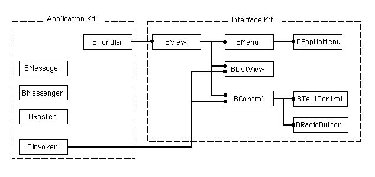
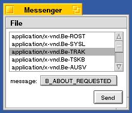
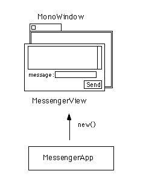
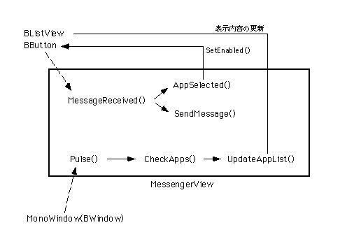
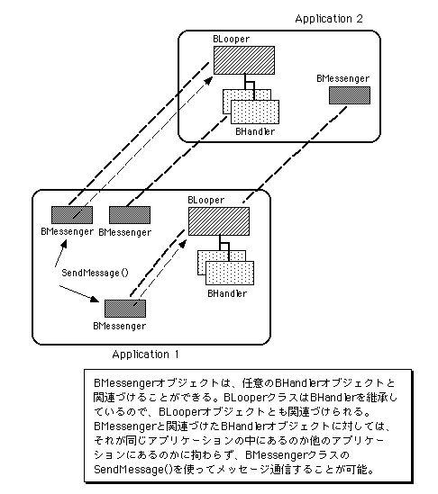
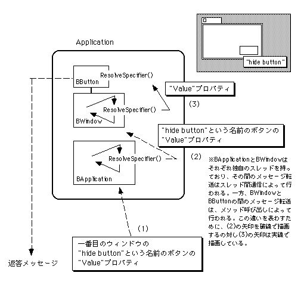
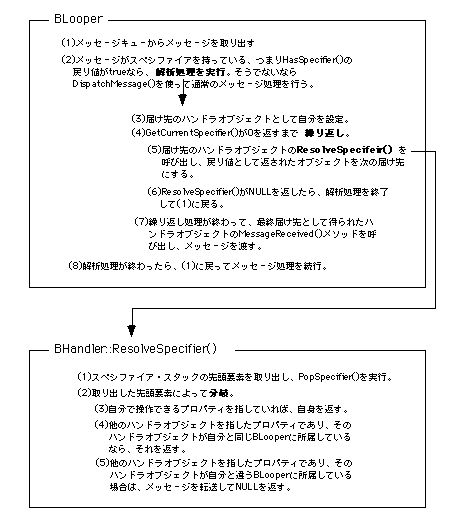
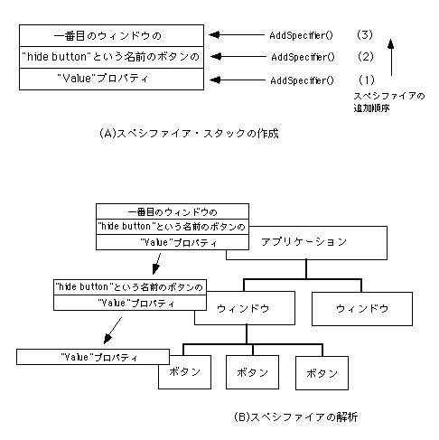
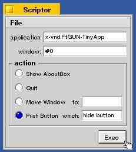
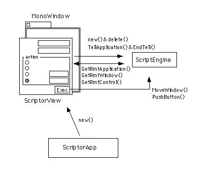

第8章 伝えたいメッセージ
この章では、他のアプリケーションとメッセージ通信を行います。つまり、題材として以下のものをとりあげます。
◇他のアプリケーションにメッセージを送る
◇現在動作しているアプリケーションの一覧表示情報を取得する
◇他のアプリケーションのウィンドウやボタンを遠隔操作する
これらの題材をプログラミングするために、BeOSのAPIが提供しているクラスのうち、主に以下のものを利用します。
●BMessenger(Application Kit)
●BMessage(Application Kit)
●BRoster(Application Kit)
●BListView(Interface Kit)
●BPopUpMenu(Interface Kit)
●BRadioButton(Interface Kit)
●BTextControl(Interface Kit)
これらのクラスの間の階層関係を、図8.1に示します。

図[8.1] 第8章で主に扱うクラス間の階層図
プログラミングの説明に使うサンプルアプリケーションは、全部で二つ用意しています。8.1節では、現在動作しているアプリケーションを一覧表示し、指定したものにメッセージを送るアプリケーションを作ります。また、8.3節ではBeOSのスクリプティング機構を利用したアプリケーションを作ります。このアプリケーションは、単に他のアプリケーションにメッセージを送るだけではなく、相手からウィンドウやボタンの情報を取得し、それらのウィンドウやボタンに対して直接メッセージを送ることができます。
どちらのアプリケーションも、ごく基本的な機能しか持っていません。しかし、この章の説明を参考にしてBeOSのアプリケーション間通信機構を理解すれば、高度な機能を持つアプリケーションを作ることができるでしょう。
8.1 メッセージが届くまで
この節では、他のアプリケーションに対してメッセージを送る機能を持った“Messenger”というサンプルアプリケーションを使って、アプリケーション間通信のプログラミングを説明します。サンプルコードを読んでみれば、非常に簡単なプログラミングで済んでしまうことが分かるはずです。8.1.1 Messengerアプリケーションの機能と構造
まず、サンプルアプリケーションについて見ておきましょう。図8.2が、この節で使う“Messenger”という名前のサンプルを動かした様子です。

図[8.2] Messengerのスクリーンショット
次に、このアプリケーションの機能、つまりMessengerの外部仕様を述べます。
・起動するとウィンドウを一枚開き、現在動作しているアプリケーションのシグネチャをリストボックスに一覧表示する。
・一覧表示されたアプリケーションのうち、選択したものに対してメッセージを送信する。
・送信するメッセージは、アバウトダイアログの表示要求(B_ABOUT_REQUESTED)または終了要求(B_QUIT_REQUESTED)の二つであり、どちらにするかをポップアップメニューで指定できる。
上に書いた外部仕様と図8.2のスクリーンショットだけでは実際の動きが分からない場合は、自分で動かしてみて下さい。Messengerアプリケーションのソースファイルは、付録に付けたサンプルコード集の“8.1_Messenger”というフォルダに入っています。なお、第5章で最初に使ったサンプルアプリケーション(EmptyApp)を作って動かした人なら、その時にMessengerを使っているはずです。EmptyAppは何もウィンドウを開かないのでそのままでは終了できないため、Messengerを使って終了要求メッセージを送って終了するように説明したのですが、憶えていますか?
Messengerアプリケーションの操作方法は、5.1.1で説明しました。使い方が分からない人は、5.1.1の説明を読み返して下さい。使い方が分かったら、リストに表示されているアプリケーションのうち“application/x-vnd.Be-TRAK”というシグネチャのものを選んでB_ABOUT_REQUESTEDメッセージを送ってみて下さい。アバウトダイアログには何と表示されているでしょうか?その次は、“application/x-vnd.FtGUN-Messenger”を選んでB_QUIT_REQUESTEDメッセージを送って下さい。何が起こるでしょうか。
Messengerアプリケーションの動きが分かったら、次はその内部を見てみましょう。図8.3に、Messengerのモジュール構成を示します。

図[8.3] Messengerのモジュール構成図
図8.3に示したモジュールのうち、中心的な役割を果たすのがMessengerViewクラスです。MessengerViewはBViewのサブクラスで、アプリケーションの一覧表示や、選択されたアプリケーションにメッセージを送る機能を持っています。図8.3に示したそれぞれのクラスの概要を、以下に述べます。
■MessengerAppクラス
Messengerのアプリケーションクラス。BApplicationクラスのメソッドのうち、フック関数として提供されているReadyToRun()とAboutRequested()を再定義しています。ウィンドウを生成し、MessengerViewを貼りつけて表示してくれます。
■MonoWindowクラス
ウィンドウクラスです。前の第7章の説明で使ったRegularWindowのサブクラスで、自分が終了する時にアプリケーションへ終了要求メッセージ(B_QUIT_REQUESTED)を送ります。また、ウィンドウが閉じられようとした時に、アプリケーションを終了してもよいかどうかをユーザに確認してくれます。なお、RegularWindowクラスと同様、これ以降に登場するサンプルアプリケーションでも利用していますので、サンプルコード集ではライブラリ用のフォルダ(“MyLib/GUI”)に収録しています。
■MessengerViewクラス
ビュークラスです。動作中のアプリケーションを一覧表示し、また“Send”ボタンがクリックされると、選択されているアプリケーションにメッセージを送信します。リストボックスやボタンなど、他のビュー部品をサブビューとして持ち、それらを適切にレイアウトします。
8.1.2 Messengerアプリケーションのソースコード
前述した、Messengerアプリケーションを構成するクラスのうち、MessengerAppクラスとMessengerViewクラスのソースをリスト8.1～8.3に示します。ただし、ページ数の都合上、MessengerAppクラスは実装部の掲載を省略しました。また、MessengerViewクラスも、実装部を載せたリスト8.3には重要なメソッドしか入れていません。
[リスト8.1] MessengerApp.h
#ifndef _MESSENGER_APP_H_
#define _MESSENGER_APP_H_
#include <app/Application.h>
/*
* MessengerAppクラスの定義
*/
class MessengerApp : public BApplication {
// メソッド
public:
// 初期化と解放
MessengerApp(void);
~MessengerApp(void);
private:
// 起動と終了
void ReadyToRun(void);
// メニュー応答
void AboutRequested(void);
};
#endif /* _MESSENGER_APP_H_ */
[リスト8.2] MessengerView.h
#ifndef _MESSENGER_VIEW_H_
#define _MESSENGER_VIEW_H_
#include <interface/View.h>
/*
* MessengerViewクラスの定義
*/
class MessengerView : public BView {
// メソッド
public:
// 初期化と解放
MessengerView(BRect frame, uint32 resizeMask);
~MessengerView(void);
private:
// 描画処理
void AttachedToWindow(void);
void MakeContent(void);
void AdjustContent(void);
// メッセージ処理
void MessageReceived(BMessage* message);
void Pulse(void);
void AppSelected(void);
void SendMessage(void);
// アプリケーションの一覧表示
void CheckApps(void);
void UpdateAppList(const BList* newList);
// データメンバ
private:
BList* fAppList; /* 動作中のアプリケーション群 */
};
#endif /* _MESSENGER_VIEW_H_ */
[リスト8.3] MessengerView.cp
/*
* メッセージ処理; MessengerView
*/
void
MessengerView::MessageReceived (BMessage* message)
{
switch (message->what) {
case APP_SELECTED:
this->AppSelected(); break;
case SEND_MESSAGE:
this->SendMessage(); break;
default:
BView::MessageReceived(message);
}
return;
}
void
MessengerView::Pulse (void)
{
this->CheckApps();
return;
}
void
MessengerView::AppSelected (void)
{
BButton* theButton = (BButton*)this->FindView(kSendButton);
BListView* theList = (BListView*)this->FindView(kListView);
theButton->SetEnabled(theList->CurrentSelection() >= 0);
return;
}
void
MessengerView::SendMessage (void)
{
status_t sts;
team_id theTeam;
app_info theInfo;
BListView* theList = (BListView*)this->FindView(kListView);
BMenuField* theMenuField = (BMenuField*)this->FindView(kPopupMenu);
BMenuItem* theMenuItem;
uint32 theCommand;
/* 選択中のアプリケーションに対するBMessengerオブジェクトを生成 */
theTeam = (team_id)fAppList->ItemAt(theList->CurrentSelection());
be_roster->GetRunningAppInfo(theTeam, &theInfo);
BMessenger theMessenger(theInfo.signature, theTeam, &sts);
if (sts != B_OK)
goto err;
/* ポップアップメニューで指定されたコマンドを取得 */
theMenuItem = theMenuField->Menu()->FindMarked();
if (strcmp(theMenuItem->Label(), kAboutLabel) == 0)
theCommand = B_ABOUT_REQUESTED;
else if (strcmp(theMenuItem->Label(), kQuitLabel) == 0)
theCommand = B_QUIT_REQUESTED;
else {
sts = B_ERROR;
goto err;
}
/* メッセージを送る */
theMessenger.SendMessage(theCommand);
return;
err:
::Error("MessengerView::SendMessage", sts);
return;
}
/*
* アプリケーションの一覧表示; MessengerView
*/
void
MessengerView::CheckApps (void)
{
BList tmpList;
/* 動作中のアプリケーションリストを取得 */
be_roster->GetAppList(&tmpList);
/* 現在表示しているものと違っていたら表示を更新 */
if (tmpList.CountItems() != fAppList->CountItems())
this->UpdateAppList(&tmpList);
else {
for (int32 i = 0, n = tmpList.CountItems(); i < n; ++i) {
team_id theTeam = (team_id)tmpList.ItemAt(i);
if (theTeam != (team_id)fAppList->ItemAt(i)) {
this->UpdateAppList(&tmpList);
break;
}
}
}
return;
}
void
MessengerView::UpdateAppList (const BList* newList)
{
BListView* theListView = (BListView*)this->FindView(kListView);
BListItem* aListItem;
app_info anInfo;
/* アプリケーションリストを更新 */
*fAppList = *newList;
/* 表示リストをクリア */
while ((aListItem = theListView->RemoveItem((int32)0)) != NULL) {
delete aListItem;
}
/* 各アプリケーションのシグネチャを表示リストに挿入 */
for (int32 i = 0, n = newList->CountItems(); i < n; ++i) {
team_id theTeam = (team_id)newList->ItemAt(i);
BStringItem* newItem;
if (be_roster->GetRunningAppInfo(theTeam, &anInfo) == B_OK) {
newItem = new BStringItem(anInfo.signature);
theListView->AddItem(newItem);
}
}
/* 選択状態の解除 */
this->AppSelected();
return;
}
最初はアプリケーションクラスです。前の章の説明で使ったClockworkWaveAppクラス(リスト7.1, 7.2)と大体同じで、むしろ簡単になっています。データメンバを持たないのでコンストラクタもデストラクタも空ですし、AboutRequested()メソッドの内容はClockworkWaveAppと同じです。また、ReadyToRun()メソッドの内容は、ウィンドウが一枚しかないぶん単純です。ウィンドウのSetSizeLimits()メソッドを呼び出して、リサイズ可能な最小サイズを設定しているくらいしか違いはありません。
校正時に掲載リストを減らしたため、以下の記述には若干の食い違いがある。('98. 5/19, koga@ftgun.co.jp)
次に、中心となっているMessengerViewクラスを見てみましょう。このクラスのソースファイル(MessengerView.cp)は、リスト8.4とリスト8.5の二つに分けて掲載しています。リスト8.4には、リストボックスやボタンなど、ビュー部品の生成とレイアウトを行うメソッド、および#include文や各種定数の定義が入っています。一方、リスト8.5には、MessengerViewクラスの中でも重要なメソッドだけを抜き出して入れました。
順番通り、先に8.4の方を説明しましょう。MessengerViewクラスでは、コンストラクタの中でビュー部品を生成して自分のサブビューに設定し、ウィンドウに貼りつけられたときにサブビューのレイアウトを行います。それぞれの処理は、次の二つのメソッドで行います。
■MakeContent()
MessengerViewのコンストラクタから呼び出されます。リストボックスやボタンなど、ビュー部品を生成した後、AddChild()メソッドを使って自身のサブビューに設定します。なお、各ビュー部品のサイズと位置はレイアウト時に調節するため、生成する時に指定するフレーム矩型は、適当なものを与えています。
■AdjustContent()
MessengerViewのAttachedToWindow()メソッドから呼び出されます。AttachedToWindow()は、前の章のサンプル(ClockworkWave)でも説明したようにBViewクラスが提供しているフック関数であり、ビューオブジェクトがウィンドウに貼りつけられた時に呼び出されます。AdjustContent()メソッドでは、各ビュー部品に対してResizeTo()メソッドやResizeBy()メソッドを呼び出してサイズを調節し、それからMoveTo()メソッドを呼び出して適切な位置に移動しています。
リスト8.4でAdjustContent()メソッドの内容を見ると、レイアウトに使うサイズや位置のパラメータの値を、ソースコードの中で直接指定してしまっているのが分かるでしょう。本当は、定数として定義したものを使うようにして後で変更が必要になった時の対処を楽にすべきなのですが、ここでは簡単のために省略しています。ビュー部品のレイアウト処理は、4.1節で紹介したようなビューエディタを使えばプログラミングしなくても済む部分ですから、本書ではあまり重用視していません。かなり適当なプログラミングをしていますので、あらかじめご了承下さい。
さて、Messengerアプリケーションでは、これまでのサンプルで使ったことのないビュー部品のクラスを、四つ使っています。以下に、それぞれのクラスの役割を示します。なお、本書執筆時点で利用できるビュークラスの説明は、6.2節でまとめて行っています。したがって、ここでは6.2節で述べた概要では書き切れなかったことのうち、本章のサンプルコードを読むうえで参考になることだけを述べます。リスト8.4と8.5の他に、Messengerアプリケーションのスクリーンショット(図8.2)を一緒に見ながら説明を読むと、わかりやすいでしょう。
■BListViewクラス
アプリケーションのシグネチャをリスト表示するのに使っています。リスト項目を複数選択できるようにするかどうかを、コンストラクタの第三引数で指定できます。リスト8.4では“B_SINGLE_SELECTION_LIST”を渡し、一時に一つのリスト項目しか選択できないようにしています。また、リスト項目が選択された時に送られる通知メッセージをSetSelectionMessage()でセットします。
なお、BListViewクラスだけではリスト表示は行えません。リスト要素のオブジェクトを生成し、これをBListViewクラスのAddItem()メソッドを使ってリストに追加して、はじめてリスト項目が表示されるのです。リスト要素のためにBListItemクラスが提供されており、MessengerViewでは“BStringItem”というサブクラスを使ってシグネチャの文字列を表示しています。BStringItemクラスのインスタンスを生成してリストに追加する手順は、リスト8.5のMessengerView::UpdateAppList()メソッドを参照して下さい。
■BScrollViewクラス
他のビューをサブビューにして、スクロール表示してくれます。スクロール表示するビューは、コンストラクタの第二引数で指定します。リスト8.4では、リスト表示ビュー(BListView)を渡して、リストを垂直方向にスクロール表示できるようにしています。
なお、スクローラを付けるかどうかは、コンストラクタの第五および第六引数で指定します。リスト8.4では、水平方向のスクローラを付けず、垂直方向のスクローラのみを付けるように指定しています。その他の引数の詳細については、APIリファレンスを参照して下さい。次の第9章では、水平方向のスクローラを付ける場合の例を示します。
■BPopUpMenuクラス
ポップアップメニューを表示して、複数の選択項目の中から一つだけを選ばせる場合に利用するクラスです。MessengerViewでは、次に述べるBMenuFieldクラスと組み合わせ、他のアプリケーションに送るメッセージを指定するのに使っています。このクラスはBMenuのサブクラスであり、メニュー項目の追加手順は同じです。
なお、BMenuクラスには、現在選択されている項目を返してくれるFindMarked()というメソッドがあり、BMessengerViewではこのメソッドを呼び出して他のアプリケーションへ送るべきメッセージを調べています。したがって、メニューの選択項目が変わってもそれを知る必要はありません。このため、リスト8.4ではそれぞれのメニュー項目(BMenuItem)を生成する際、コンストラクタの第二引数にNULLを渡し、メニュー項目の選択通知が送られないようにしています。
■BMenuFieldクラス
ポップアップメニュー表示用のボタンとして振る舞うクラスです。現在選択されているメニュー項目のラベルを表示します。コンストラクタの第四引数に渡したメニューオブジェクトを内部に持ち、クリックされるとメニューの内容を表示してくれます。
以上のクラスのうち、MessengerアプリケーションではBListViewクラスからメッセージを受け取ります。つまり、メッセージを送るアプリケーションをリストから選択すると、その選択通知をBListViewから受け取り、“Send”ボタンがディム化(注8-1)されていればそれを解除するのです。これを行っているのが、リスト8.5のMessengerView::AppSelected()メソッドです。リストビュー(BListView)のCurrentSelection()メソッドを呼び出して選択要素を調べ(注8-2)、選択要素があるかどうかでボタンをディム化するかどうかを決めています。ボタン(BButton)のSetEnabled()メソッドは、falseを渡すとディム化し、trueを渡すとディム化を解除するものです。
ボタンをクリックした時のメッセージと同様に、リストビューの選択通知メッセージの送り先はデフォルトだと所属するウィンドウですが、SetTarget()メソッドで変更できます。リスト8.4では、AdjustContent()メソッドの中でSetTarget()メソッドを呼び出し、MessengerViewオブジェクトを選択通知メッセージの送り先に設定しています。なお、SetTarget()メソッドを呼び出すタイミングには注意して下さい。このメソッドは、メッセージの送り先、つまりターゲットに指定するビューオブジェクトがウィンドウに関連づけられた後でないと有効に働きません。ですから、たとえばMessengerViewクラスのMakeContent()メソッド内でSetTarget()を呼び出しても正しく働かず、MessengerViewをターゲットに設定することができないのです(注8-3)。AdjustContent()メソッドは、MessengerViewがウィンドウに貼りつけられた時に呼び出されるフック関数のAttacheToWindow()の中で呼び出されます。したがって、このメソッドでSetTarget()を呼び出せば、正しくターゲットを設定することができるのです。
次に、リスト8.5の内容について説明します。このリストにはMessengerViewクラスの中心的なメソッド、つまりユーザ入力に対する応答処理と、アプリケーション情報の取得やアプリケーション間通信を行うものが載っています。図8.4に、各ビュー部品の操作に対するメッセージの流れと応答動作を示します。

図[8.4] MessengerViewクラスの応答動作
リスト8.5に載っているMessengerViewクラスの六つのメソッドについて、それぞれの働きを以下に述べます。図8.4と見比べながら読んでみて下さい。
■MessageReceived()
これまでの章の説明でも何度か出てきましたが、ビュークラス(BView)が継承しているBHandlerクラスのフック関数です。受け取ったメッセージのうち、MessengerViewクラスで定義している“APP_SELECTED”と“SEND_MESSAGE”以外のものは全て親クラスのBViewに渡しています。
MessengerViewで定義している二つのメッセージは、それぞれ“APP_SELECTED”がリストボックスでアプリケーションが選択されたことを知らせるもの、そして“SEND_MESSAGE”はアプリケーションにメッセージを送る指示を伝えるものです。“APP_SELECTED”はリストビュー(BListView)の選択通知メッセージ、そして“SEND_MESSAGE”は、“Send”というラベルの送信ボタンをクリックした時に送られてくるメッセージです。それぞれのメッセージに対する応答動作として、“APP_SELECTED”を受け取ったらAppSelected()メソッドを呼び出し、“SEND_MESSAGE”を受け取ったらSendMessage()メソッドを呼び出します。
■Pulse()
第7章のサンプルでもアニメーション表示に利用しましたが、BViewクラスのフック関数です。現在動作しているアプリケーションを定期的に監視し、リストの表示内容に反映させるために実装しています。CheckApps()メソッドを呼び出しています。
なお、ウィンドウオブジェクトによってPulse()メソッドが呼び出されるように、MessengerViewクラスのコンストラクタではBViewクラスのコンストラクタの第四引数に“B_PULSE_NEEDED”を渡しています。リスト8.4で確認してみて下さい。
■AppSelected()
アプリケーションの一覧表示リストがクリックされた時に呼び出されます。リストビュー(BListView)のCurrentSelection()メソッドを使って選択されているアプリケーションがあるかどうかを調べ、ない場合には送信ボタンをディム化します。
■SendMessage()
送信ボタンがクリックされた時に呼び出されます。一覧表示リストで選択されているアプリケーンを調べ、ポップアップメニューで指定されているメッセージを送信します。選択されているアプリケーションは、リストビュー(BListView)のCurrentSelection()メソッドで調べます。また、指定されたメッセージを調べるのには、ポップアップメニュー(BPopUpMenu)のFindMarked()メソッドを使っています。
次に述べるCheckApps()メソッドで説明するように、MessengerViewクラスでは、現在動作しているアプリケーションのチームIDを格納するリストをデータメンバとして持っています。このデータメンバは“fAppList”という名前のBListオブジェクトですが、このリスト内での順番と一覧表示リストでの表示順が同じになるようにしています。したがって、リストビューのCurrentSelection()メソッドの戻り値、つまり選択されている項目のインデックスを引数にしてfAppListのItemAt()メソッドを呼び出せば、対応するアプリケーションのチームIDを取得できるのです。
また、ポップアップメニューのFindMarked()メソッドが返す、選択されているメニュー項目(BMenuItem)に対してLabel()メソッドを呼び出して項目名を取得し、それを使って送るべきメッセージを判定しています。
なお、他のアプリケーションにメッセージを送る手順については、この後の8.1.3で説明します。
■CheckApps()
Pulse()メソッドの働きによって、定期的に呼び出されます。BRosterオブジェクトに対してGetAppList()メソッドを呼び出し、現在動作中のアプリケーションのチームIDリストを取得します。リスト8.5では“be_roster”という変数にアクセスしていますが、これはBRosterオブジェクトを指す大域変数です。なお、BRosterクラスについては、この後の8.1.3でBMessengerクラスと一緒に説明します。
CheckApps()メソッドでは、取得したアプリケーションの一覧とデータメンバのfAppListの内容に違いがある場合、次に述べるUpdateAppList()メソッドを呼び出して表示を更新します。リスト8.5では、まず二つのリストの要素数を調べ、要素数に違いがなかった場合は全要素を比較しています。最初に要素数だけを比較することで多少の最適化を図っているのですが、これは省略してしまって構いません。
■UpdateAppList()
アプリケーションの一覧表示リストの内容を更新する必要が生じた場合に、CheckApps()メソッドから呼び出されます。このメソッドでは、まずリストビューから全ての項目を取り除いて解放し、それから動作中のアプリケーションに対する項目を追加し直しています。BRosterクラスのGetRunningAppInfo()メソッドを使って各アプリケーションのシグネチャを取得し、文字列表示用のリスト項目(BStringItem)を生成します。生成した項目は、リストビューのAddItem()メソッドを使ってリストに追加します。
なお、リストをクリアする際に、RemoveItem()メソッドを使って項目を一つずつ取り除いた後、それを解放していることに注意して下さい。RemoveItem()メソッドでは取り除いた項目を解放しないため、自分で解放する必要があるのです。リストビュー(BListView)にはMakeEmpty()という、リストを空にするメソッドがありますが、これも、全ての項目をリストから取り除くだけで解放処理は行いません。したがって、MakeEmpty()メソッドを使ってリストをクリアすると、無駄なメモリ領域を消費していくことになるのです。取り除いた項目を解放することを忘れないようにして下さい。
- (注)8-1
- ボタン全体が薄い色で表示され、クリックに応答しない状態になっていることを指して「ディム化」しているといいます。
- (注)8-2
- BListViewクラスのCurrentSelection()メソッドは、現在選択されているリスト項目を調べ、最初に見つかったもののインデックスを返します。リスト項目のインデックスは0から始まり、負の値が返された場合は、選択された項目がないことを意味しています。
- (注)8-3
- SetTarget()は、BListViewクラスやBControlクラスが継承しているBInvokerクラスのメソッドです。BInvokerはApplication Kitに所属しており、ユーザの操作などに対するアクションとして、SetTarget()メソッドで設定された送り先にメッセージを送るための機能を持つクラスです。SetTarget()には、BHandlerまたそのサブクラスのオブジェクトを渡して送り先に設定します。送り先に設定するオブジェクトは、ウィンドウなどBLooperクラスのオブジェクトに関連づけられていなければなりません。
8.1.3 他のチームに届けるときは
この節の最後として、他のアプリケーションとメッセージ通信する際に大きな役割を果たす二つのクラス、BRosterクラスとBMessengerクラスについて説明します。以下に、これら二つのクラスの役割を示します。■BRosterクラス
アプリケーション情報を管理し、動作中のアプリケーションに対する情報を与えてくれます。2.3で説明したサーバモジュールのうち、“registrar”にアクセスして必要な処理を行います。BRosterクラスのインスタンスはAPI側で自動的に生成されるので、アプリケーション側で生成してはいけません。BRosterのインスタンスを指した“be_roster”という大域変数が定義されており、この変数を使ってBRosterオブジェクトにアクセスします。
リスト8.5では、BRosterクラスのメソッドのうちGetAppList()とGetRunningAppInfo()を使っています。GetAppList()は、現在動作しているアプリケーション全てのチームIDをリストにして返すもので、MessengerViewクラスのCheckApp()メソッドで使っています。一方、GetRunningAppInfo()はチームIDで指定したアプリケーションの情報を返すもので、MessengerViewクラスのSendMessage()メソッドとUpdateAppList()メソッドで使っています。
■BMessengerクラス
他のアプリケーションとの間でメッセージ通信する際、代理オブジェクト(proxy)として働くクラスです。リスト8.5でMessengerView::SendMessage()を見ると分かるように、BMessengerクラスのコンストラクタには、相手側のアプリケーションのシグネチャとチームIDを渡します。また、メッセージを送るにはSendMessage()メソッドを使います。
SendMessage()はBLooperクラスのPostMessage()メソッドと似ており、同じような働きをします。つまり、BeOSのマイクロカーネルが提供するスレッド間通信機構(ポート)を使って、他のスレッドにメッセージを送ってくれます(注8-4)。なお、BLooperの場合とは違い、BMessengerクラスのSendMessage()では同期式のメッセージ通信を行うことが可能です。8.3節でサンプルを使って説明するように、SendMessage()メソッドの第二引数に返答メッセージ用のBMessageオブジェクトを渡すと、メッセージを送った相手から返事が届くのを待ち、受け取った返答メッセージをBMessageに書き込んで返してくれるのです。
このように、BRosterクラスとBMessengerクラスを組み合わせて使えば、他のアプリケーションへメッセージを送ることができます。まずBRosterのメソッドを使って相手側アプリケーションの情報を取得し、それからアプリケーション情報を使ってBMessengerオブジェクトを初期化します。そして、BMessengerオブジェクトに対してSendMessage()メソッドを呼び出し、メッセージを送るのです。
さて、この節を終わる前に、BMessengerクラスについてもう少し説明しておきます。実は、BMessengerは他のアプリケーション以外との通信にも利用することができます。たとえば、同じアプリケーション内のBLooperオブジェクトや、それに所属するBHandlerオブジェクトに対してBMessengerオブジェクトを関連づけ、BMessengerを通してメッセージを送ることができます。その場合、BLooperクラスのPostMessage()を使うのと基本的に同じ流れでメッセージで送られるのです。唯一の違いは、上で述べたようにBMessengerを通すと同期式のメッセージ通信を行うことが可能だということだけです。
BMessengerとBLooper、そしてBHandlerの間の関係を整理するために、それを図にまとめてみました。図8.5を見て下さい。

図[8.5] BMessengerとBLooper/BHandlerの関係
最初の説明では、BMessengerクラスは他のアプリケーションとメッセージ通信するための代理オブジェクトだと書きました。しかし、正確にいうとそうではなく、BMessengerクラスはBHandler一般に対する代理オブジェクトなのです。つまり、相手はアプリケーション(BApplication)であっても構いませんし、それからウィンドウ(BWindow)、またビューオブジェクト(BView)でも構いません。一番重要なのは、相手のBHandlerオブジェクトが自分と同じアプリケーション、すなわち同じチームに所属していようが、あるいは他のチームに所属していようが変わりなく通信できるということです。
BLooperクラスのPostMessage()とBMessengerクラスのSendMessage()は似ていると書きましたが、他のチームに所属しているBLooperオブジェクトに対してPostMessage()を呼び出すことはできません。第3章で説明したように、チームはそれぞれ独立したアドレス空間を持っていますから、他のチームに所属しているオブジェクトにアクセスしてメソッド呼び出しを行うことはできないのです。BMessengerは、この「壁」を越えて、他のチームに所属するBLooperオブジェクトやBHandlerオブジェクトにメッセージを送るための仕組を提供しているのです。
第3章(3.3.2)で説明したように、BeOSのマイクロカーネルが提供しているスレッド間通信機構を利用すれば、同じチームのスレッドが相手でも他のチームに所属するスレッドが相手でも、変わりなく通信することができます。BMessengerクラスも、このスレッド間通信機構を内部で利用しています。ですから、マイクロカーネル(Kernel Kit)のスレッドAPIを直接使っても同じようなことはできるのですが、Application Kitが提供している、BMessengerクラスなどの高機能なAPIを利用することによって、より簡単にスレッド間通信のプログラミングを行えるのです。次の節では、他のチームに所属するBHandlerオブジェクト情報を取り出し、より高度なメッセージ通信を行えるようにBeOSのAPIが提供している仕組について説明します。
- (注)8-4
- 「ポート」など、BeOSのマイクロカーネルが提供しているスレッド間通信機構については、第3章の説明(3.3節)を参照して下さい。
8.2 伝える相手を探すには
この節では、他のアプリケーションを遠隔操作するための仕組、つまりスクリプティングのフレームワークについて説明します。次の8.3節ではサンプルアプリケーションを使って実例を示しますが、その前に、スクリプティングに関する基本事項を見ておきましょう。8.2.1 誰に何を伝えるの
他のアプリケーションを遠隔操作するといっても、どうすればよいのでしょうか?前の節では、動作中のアプリケーションの中から一つを選び、それに対してアバウトダイアログの表示要求メッセージや終了要求メッセージを送りました。これは、単に他のアプリケーションの中のアプリケーションオブジェクト(BApplication)へ命令を一つ送っているだけで、それほど面白くはありません。遠隔操作というからには、他のアプリケーションのウィンドウを動かしたり、ボタンのクリックをシミュレートさせたりすることができるべきです。このような、アプリケーションの遠隔操作を行うためには、相手のアプリケーションに対して次の情報を伝える必要があります。
a.)操作する対象
b.)操作の内容
相手のアプリケーションに何をして欲しいのかを伝えるには、操作の対象と内容を指定しないといけません。たとえばウィンドウを動かすのであれば、「動かす」という操作を「ウィンドウ」という対象に適用して欲しいと伝えます。また、ボタンのクリックをシミュレートするのであれば対象は「ボタン」であり、操作の対象は「クリックのシミュレート」です。
では、他のアプリケーションに操作の対象と内容を伝えるには、どうすればよいでしょうか。単に「ウィンドウ」や「ボタン」といっても、複数枚のウィンドウを持ち、それぞれにボタンが付いているのであれば、どれを指すのか伝えられた方では分からないはずです。また、「動かす」や「クリックのシミュレート」という操作内容についても、具体的に何をすればよいのかを表現しないと、これも伝えられた方では分かりません。
このように、アプリケーションを遠隔操作するためには、操作の対象を指定する方法と操作の内容を表現する形式が定められ、すべてのアプリケーションの間で了解がとれている必要があります。BeOSでは、これらの仕組をApplication Kitが提供するフレームワークの中に組み込み、特に工夫しなくてもアプリケーションが遠隔操作可能になるようにしています。この仕組について、次に説明しましょう。
なお、他のアプリケーションにメッセージを送って遠隔操作することを指して、BeOSでは「スクリプティング(scripting)」と呼んでいます(注8-5)。そして、スクリプティング機構を実現しているフレームワークのことを、ここではスクリプティングのフレームワークと呼ぶことにします。
- (注)8-5
- 一般的には、スクリプティングと言った場合は何らかのスクリプト言語でスクリプトをプログラミングし、それを動かしてアプリケーションを制御することを指します。しかし、スクリプト言語の実行システム内部ではスクリプトの内容をアプリケーション間通信用のメッセージ列に変換し、それを送ってアプリケーションを制御しているのが普通です。ですから、BeOSの語用が間違っているのかといえば、そうではありません。
8.2.2 スクリプティングの基本要素
BeOSのAPI(Application Kit)では、スクリプティング機構の基本構成要素として、以下の三つを提供しています。これら三つは、他のアプリケーションを遠隔操作する際に、操作の内容と対象を伝えるための標準化された表現形式を与えるものです。■コマンド
操作内容を表現するメッセージコードです。すべての操作は次に述べる「プロパティ」に対して行われます。Be社では以下の六種類の操作内容を規定しており、それらだけを使うように推奨しています。つまり、下の六つ以外のメッセージコードを定義してスクリプティングに使うことは、標準化の観点から好ましくありません。
a.)個数を返す(B_COUNT_PROPERTIES)
b.)新規に作る(B_CREATE_PROPERY)
c.)削除する(B_DELETE_PROPERTY)
d.)実行する(B_EXECUTE_PROPERTY)
e.)値を返す(B_GET_PROPERTY)
d.)値を設定する(B_SET_PROPERTY)
アプリケーションを遠隔操作する際は、BMessageオブジェクトのメッセージコードとして上の六つのどれかをセットし、それからメッセージを送ります。もちろん、メッセージコードだけでは操作内容しか伝えられませんので、メッセージの付随データとして操作対象の指定情報を追加することが必要です。メッセージに操作対象の指定情報を追加するには、BMessageクラスのAddSpecifier()メソッドを使います。
■プロパティ
操作対象となるものです。BeOSのスクリプティング・フレームワークでは、スクリプトによる操作対象はメッセージを受け取るオブジェクトのプロパティです。プロパティは、次に述べるスペシファイアを使って指定されます。なお、オブジェクト自体を別のオブジェクトのプロパティとして扱うことも可能です。たとえば、ボタンはウィンドウのプロパティですし、またウィンドウはアプリケーションのプロパティです。
なお、ウィンドウを動かす場合の例でいうと、操作対象はウィンドウのフレーム矩型、つまり“Frame”という名前のプロパティになります。
■スペシファイア
操作対象を指定する情報で、BMessageオブジェクトを使って受け渡しを行います。指定の仕方を表わす定数をメッセージコードとして持たせ、対象とするプロパティの名前、およびプロパティを特定するためのデータを、メッセージの付随データとして持たせます。Be社では、スペシファイア用の定数として次の七つを定義しています(注8-6)。
a.)直接指定(B_DIRECT_SPECIFIER)
b.)名前指定(B_NAME_SPECIFIER)
c.)ID指定(B_ID_SPECIFIER)
d.)インデックス指定(B_INDEX_SPECIFIER)
e.)逆順のインデックス指定(B_REVERSE_INDEX_SPECIFIER)
f.)インデックス範囲指定(B_RANGE_SPECIFIER)
g.)逆順のインデックス範囲指定(B_REVERSE_RANGE_SPECIFIER)
ウィンドウを指定する例でいうと、「一番目のウィンドウ」を操作対象にする場合は、BMessageオブジェクトのメッセージコードに“B_INDEX_SPECIFIER”をセットします。そして、"property"という名前で“Window”という文字列データを追加し、さらに"index"という名前の数値データとして1を追加します。このようにして操作対象の指定情報をセットしたBMessageオブジェクトは、AddSpecifer()メソッドの引数として、スクリプティング用のメッセージに渡すことができます。
なお、Be社で定義している七つのスペシファイア定数に加え、自分でスペシファイアを定義して利用することも可能です(注8-7)。
コマンドとプロパティ、そしてスペシファイアの関係を整理すると、次のようになります。
・スクリプティングとは、他のアプリケーション内部のオブジェクトが持つプロパティに対し、何らかの操作を行って制御することである。
・スクリプティングを行うには、対象とするプロパティとプロパティに対する操作の内容を伝えるメッセージを、相手のアプリケーションへ送る。
・プロパティに対して行う操作の内容を表わすのがコマンドであり、スクリプティング用メッセージのメッセージコードにセットされる。
・対象とするプロパティを指定するのがスペシファイアであり、スクリプティング用メッセージの付随データとして渡される。
このように、操作の内容と操作対象、そして操作対象の指定情報という三つの要素を用いて、遠隔操作、つまりスクリプティングのための情報伝達を行うのです。遠隔操作される側のアプリケーションでは、これらの情報をスクリプティング用のメッセージとして受け取り、操作対象となっているプロパティの持ち主であるオブジェクトにメッセージを届けます。メッセージを受け取ったオブジェクトは、コマンドに従ってプロパティに対する操作を行い、結果を入れた返答メッセージを返すのです。オブジェクトの割り出しは、操作対象の指定情報、つまりスペシファイアを解析することによって行います。
なお、スクリプティング用のメッセージを受け取るオブジェクトは、BHandlerまたはそのサブクラスに所属します。BHandlerはメッセージ応答機能を定義した基底クラスですから、スクリプティング・フレームワークもBHandlerクラスによって定義されているのです。アプリケーションやウィンドウ、またビューのクラスは全てBHandlerを継承していますので、BeOSのAPIを使えば、他に何もしなくてもスクリプティング対応したアプリケーションを作ることができるのです。
次は、どのようにして宛先のBHandlerオブジェクトにスクリプティング用のメッセージが届けられるのかを説明します。これを理解してしまえば、BeOSのスクリプティング機構を利用したアプリケーションを簡単に作れるようになるでしょう。
- (注)8-6
- コマンドとスペシファイア定数は、Application Kitのインタフェースファイル(AppDefs.hとMessage.h)で定義されています。
- (注)8-7
- スペシファイアだけではなく、アプリケーション独自のコマンドを定義して使うことも可能です。しかし、独自定義によるアプリケーション側での拡張を、Be社が公式に認めているかどうかという点で、スペシファイアとコマンドの扱いが異なっているのです。
8.2.3 スクリプティング・フレームワーク
図8.6に、アプリケーションが受け取ったスクリプティング・メッセージが、宛先に指定されたBHandlerオブジェクトに届けられるまでの流れを示します。

図[8.6] スクリプティング・メッセージの配送経路
上の図に示したように、スクリプティング・メッセージに対する応答では、BHandlerクラスのResolveSpecifier()メソッドが重要な役割を果たします。このメソッドでは、受け取ったメッセージに格納されたスペシファイアを解析し、メッセージを受け取るべきオブジェクトを割り出します。図の例では「一番目のウィンドウの“hide button”という名前のボタンの“Value”プロパティ」という指定をされていますが、この場合メッセージの届け先はボタンオブジェクトになります。最初にメッセージを受け取るのはアプリケーションオブジェクトですが、そこからウィンドウオブジェクトにメッセージが転送され、さらにウィンドウオブジェクトからボタンオブジェクトにメッセージが渡され、最後はボタンオブジェクトによって処理されます。
ここで、アプリケーションに送られたメッセージには合計三つのスペシファイアが格納されていることに注意して下さい。つまり、(1)「一番目のウィンドウ」、(2)「“hide button”という名前のボタン」、(3)「“Value”」、の三つです(注8-8)。このように、一つのメッセージに格納された複数のスペシファイアを「スペシファイア・スタック」と呼びます。「スタック」と呼ぶのは、スペシファイアを追加する時の順番と取り出す時の順番が逆だからです。メッセージに対するスペシファイアの追加や取り出しは、BMessageクラスのAddSpecifier()メソッドとGetCurrentSpecifier()メソッド、そしてPopSpecifier()メソッドで行います。以下に、これら三つのメソッドの説明を示します。
■BMessage::AddSpecifier()
引数に受け取ったスペシファイアを、BMessageオブジェクトに追加します。このメソッドは多重定義されており、スペシファイア・メッセージを引数にとるバージョンに加えて、プロパティ名とプロパティを特定するデータを受け取る四つのバージョンがあり、以下の通り合計五つのバージョンがあります。
◇AddSpecifier(const BMessage *message)
基本バージョンのメソッド。引数に受け取ったスペシファイア・メッセージを、メッセージに追加します。残りの四つのバージョンは、すべてこのバージョン内部で呼び出しています。
◇AddSpecifier(const char *property)
プロパティを直接指定します。“B_DIRECT_SPECIFIER”をメッセージコードに持つスペシファイア・メッセージを内部で生成し、メッセージに追加します。
◇AddSpecifier(const char *property, int32 index)
プロパティをインデックス指定します。“B_INDEX_SPECIFIER”をメッセージコードに持つスペシファイア・メッセージを内部で生成し、メッセージに追加します。
◇AddSpecifier(const char *property, int32 index, int32 range)
プロパティをインデックス範囲指定します。“B_RANGE_SPECIFIER”をメッセージコードに持つスペシファイア・メッセージを内部で生成し、メッセージに追加します。
◇AddSpecifier(const char *property, const char *name)
プロパティを名前指定します。“B_NAME_SPECIFIER”をメッセージコードに持つスペシファイア・メッセージを内部で生成し、メッセージに追加します。
AddSpecifier()メソッドを使って追加されたスペシファイアは、スタックを構成します。BMessageオブジェクトは、このスタックの要素の一つを指すインデックスを内部に持っているのですが、AddSpecifier()を使ってスペシファイアを追加すると、そのインデックスは追加されたスペシファイアを指すように更新されるのです。
■BMessage::GetCurrentSpecifier()
スペシファイア・スタックの中から、「現在の」スペシファイアに対する情報を返します。現在のスペシファイアとは、BMessageオブジェクト内部のインデックスによって指される、スペシファイア・スタック要素です。次に述べるPopSpecifier()によって、このスペシファイア・スタックのインデックスを更新しない限り、GetCurrentSpecifier()が返すスペシファイア情報は変わりません。このメソッドは、次の四つの引数を受け取ります。
◇第一引数(int32*)
現在のスペシファイアに対するインデックスを返してもらうためのバッファです。返されたインデックスは、BMessageクラスのFindMessage()メソッドまたはFindData()メソッドに渡す引数として利用します。
◇第二引数(BMessage*)
現在のスペシファイアを返してもらうためのバッファです。引数に渡されたBMessageオブジェクトには、現在のスペシファイア・メッセージの内容がコピーされます。引数にNULLを渡した場合は、無視されます。
◇第三引数(int32*)
現在のスペシファイアのメッセージコードを返してもらうためのバッファです。引数にNULLを渡した場合は、無視されます。
◇第四引数(const char**)
現在のスペシファイアのプロパティ名を返してもらうためのバッファです。引数にNULLを渡した場合は、無視されます。
このメソッドの第一引数以外はオプションであり、何も指定しない場合は全てNULLが渡されます。
■BMessage::PopSpecifier()
BMessageオブジェクト内部の、スペシファイア・スタックに対するインデックスを一減らします。このメソッドが呼び出されるまで、インデックスは最後に追加されたスペシファイアを指しており、呼び出しを一回行うごとにスタックの先頭が一つ前の要素を指すように更新されます。このメソッドは、何も引数を受け取りません。
上に述べた三つのメソッドのうち、AddSpecifier()はスクリプティング・メッセージの送り手が使うメソッドであり、残りの二つを受け手が使います。つまり、GetCurrentSpecifier()とPopSpecifier()は、BHandlerまたはそのサブクラスのResolveSpecifier()メソッドの中で利用されます。そして、ResolveSpecifier()メソッドこそが、スクリプティング・フレームワークの中心を成すメソッドです。
ResolveSpecifer()メソッドはBHandlerクラスが提供しているフック関数であり、BLooperクラスの働きによって呼び出されます。6.1節(6.1.2)では、BLooperが受け取ったメッセージはDispatchMessage()メソッドによって届け先を決定されると述べました。しかし、スクリプティング用のメッセージは例外で、DispatchMessage()より先にResolveSpecifier()メソッドが呼び出され、その結果によって届け先が変更されるのです。たとえば図8.6では、もともとアプリケーションオブジェクトが受け取ったメッセージが、最終的にはボタンオブジェクトに届けられています。図8.7に、BLooperクラスがスクリプティング・メッセージを処理する際の流れを示します。

BLooperがメッセージキューからメッセージを取り出す図[8.7] ResolveSpecifier()によるスクリプティング・メッセージの転送
→メッセージがHasSpecifiers()に真を返せば、転送処理を開始
→GetCurrentSpecifier()が0を返すか、またはResolveSpecifer()の戻り値が
NULLになるまで、繰り返しResolveSpecifier()を呼び出す
→最終的に非NULLのオブジェクトが得られたら、それを引数として
DispatchMessage()を呼び出す。
本当にDispatchMessage()が呼び出されるのか確認。直接MessageReceived()が呼び出される可能性あり。('98. 4/27, koga@ftgun.co.jp)
ResolveSpecifier()を呼び出されたBHandlerクラス
→スタックの一番上にあるスペシファイア、つまり現在のスペシファイアが指す
プロパティによって分岐
→自分で操作できるプロパティを指したものであれば、自身を返す。
→他のBHandlerオブジェクトを指しており、それが同じBLooperに所属している
場合はそのオブジェクトを返す。
→他のBHandlerオブジェクトを指しており、それが違うBLooperに所属している
場合は、そのBLooperにメッセージを転送してNULLを返す。
→スペシファイアを解析できない場合は、親クラスのメソッドを呼び出す。
図のように、スペシファイア.スタックの要素を一つずつ取り出しながら、スペシファイアによって指定されたオブジェクトの間をメッセージが転送されていきます。これらのオブジェクトは「アプリケーション→ウィンドウ→ボタン」のように、木構造を成しています。スペシファイア・スタックは、最終的なメッセージの届け先となるオブジェクトから、最初にメッセージを受け取るオブジェクトに至るまでの各スペシファイアを、順に積み上げたものなのです。メッセージを受け取った側では、このスタックに従って木構造を辿り、末端のオブジェクトにメッセージを届け、処理させます。

※AddSpecifier()によるスタックの積み上げと、ResolveSpecifier()による木構造のトラバース図[8.8] スペシファイア・スタックの作成と解析
さて、8.2.2で述べたように、それぞれのスペシファイアはオブジェクトのプロパティを指定するものです。そして、ResolveSpecifier()は、スペシファイアの指定内容を解析し、指定されたプロパティを操作するオブジェクトを返すメソッドです。それぞれのオブジェクトが持つプロパティはクラスごとに決まっており、解析不能なスペシファイアを受け取った場合は、メッセージの送り主に対してエラー(“B_MESSAGE_NOT_UNDERSTOOD”)を告げる返答メッセージが返されます。以下に、BHandlerのサブクラスのうちBApplicationとBWindow、そしてBViewとBControlクラスについて、独自のプロパティを示します。これらのクラスは、それぞれResolveSpecifier()メソッドを再定義して、自分独自のプロパティを指定された場合に応答できるようになっています。
■BApplication
“Name”プロパティと“Window”プロパティを持ちます。このうち8.3節のサンプルで扱うのは“Window”プロパティで、これはそれぞれのウィンドウオブジェクトを表わすものです。
■BWindow
“Flags”, “Look”, “Feel”, “Hidden”, “Minimize”, “Workspace”,“Title”, “Frame”, “MenuBar”, “View”プロパティを持ちます。このうち8.3節のサンプルで扱うのは“Frame”プロパティと“View”プロパティの二つです。“Frame”プロパティはウィンドウのフレーム矩型を表わすもので、“View”プロパティは、ウィンドウに貼りつけられたビューオブジェクトを表わします。
■BView
“Hidden”, “Frame”, “View”, “Shelf”プロパティを持ちます。8.3節のサンプルでは、BViewクラスのプロパティは特に扱いません。
■BControl
“Enabled”, “Label”, “Value”プロパティを持ちます。8.3節のサンプルでは、ボタンのクリックをシミュレートするのに“Value”プロパティを扱います。このプロパティは、ボタンなどのコントロール部品が持つ値を表わします。なお、BControlクラスはBViewクラスを継承していますので、BViewクラスが持つプロパティも合わせ持ちます。
上に挙げた各プロパティの詳細については、APIリファレンスを参照して下さい。リファレンスには、各プロパティに対して適用できる操作(コマンド)を表わすメッセージコード、およびスペシファイアに利用できるスペシファイア定数が示されています。また、BHandlerのサブクラスのうち、これら以外のものについてもAPIリファレンスを参照して下さい。独自のプロパティを持つクラスでは、クラスの概要説明の節に“Scripting Support”という項が設けられています。
BHandlerのサブクラスで独自のプロパティを定義した場合、それぞれのプロパティに対して適用できるコマンドとスペシファイア定数の組は、一種のプロトコルを構成します。そのプロトコルに適合したスクリプティング・メッセージだけが、そのクラスによって受け付けられるのです。この「プロトコル」のことを、「スイート(Suite)」と呼びます。スクリプティング・フレームワークでは、スイートを問い合わせるための仕組も提供しています。この仕組は、BHandlerクラスの“Suites”プロパティと、それからBHandlerクラスがフック関数として提供しているGetSupportedSuites()メソッドによって実現されています。以下に、これら二つの説明を示します。
■Suitesプロパティ
BHandlerクラスが持つプロパティであり、したがってスクリプティング・メッセージに応答可能な全てのクラスが備えるプロパティです。そのクラスがサポートしているスイートの集合を表わします。このプロパティに対して“B_GET_PROPERTY”コマンドが渡されると、次に述べるGetSupportedSuites()によって取得したスイート情報がコマンドの送り主に返送されます。
■GetSupporteSuites()メソッド
そのクラスがサポートしているスイートの情報を返します。親クラスのスイートはサブクラスに受け継がれるため、そのクラス独自のスイートに、親クラスのスイートを合わせたものが返されます。各スイートにはMIME形式の名前が付けられ、たとえばBHandlerクラスであれば“suite/vnd.Be-handler”という名前のスイート名を持っています。また、プロパティと、それに対して適用可能なコマンドとスペシファイア定数の組を表わすproperty_infoという構造体が定義されており、この構造体の配列によってスイートの内容を表現します。
あるオブジェクトの“Suites”プロパティに対する“B_GET_PROPERTY”コマンドを送ると、そのオブジェクトが所属するクラス、およびBHandlerにいたるまでの全てのサブクラスが持つスイート情報を格納したメッセージが返送されます。そのメッセージには、そのクラスがサポートする全てのスイート名が"suites"という名前のデータ項目として格納され、また各スイートの内容が"messages"という名前で格納されます。“Suites”プロパティ、つまりスイート情報を問い合わせることにより、相手のオブジェクトが受け付け可能なスクリプティング・メッセージのプロトコルを入手することができるのです。
独自のプロパティを定義したクラスでは、ResolveSpecifier()に加えてGetSupportedSuites()メソッドを再定義する必要があります。スクリプティング・フレームワークは、BLooperクラスとBHandlerクラスによるメッセージ応答機構に加え、BHandlerクラスのResolveSpecifier()メソッドとGetSupportedSuites()メソッドを導入することで実現されています。以下に、スクリプティング・フレームワークに従ってオブジェクトをスクリプト対応させる手順を示します。
1.)スクリプト対応させるオブジェクトのクラスを、BHandlerのサブクラスにする。
2.)そのクラス独自のスイートを定義する。
3.)GetSupportedSuites()メソッドを再定義し、親クラスが持つスイートの情報に加え、独自に定義したスイートの情報を返すようにする。
4.)ResolveSpecifier()メソッドを再定義し、独自に定義したプロパティに対するスペシファイアの解析処理を実装する。
5.)MessageReceived()メソッドを再定義し、スクリプティングメッセージに対する応答処理を実装する。
本書のサンプルアプリケーションでは、独自のスイートを定義する例は扱いません。しかし、練習問題で取り上げましたので、それを題材にして考えてみて下さい。
- (注)8-8
- この後の説明で述べるように、「ボタン」を表わすプロパティは存在しません。8.3節のサンプルではスクリプティングによってボタンのクリック動作をシミュレートしますが、ボタンオブジェクトの指定は“View”プロパティを使っており、ボタンに対する厳密な指定を行っていません。
8.2.4 汎用スイートと遠隔オブジェクト
スクリプティング・フレームワークに関する長い説明が続きましたが、サンプルアプリケーションの説明へ移る前に、もう一つだけスクリプティング機構の話しをします。BHandlerが提供するスイートと、それを利用して他のアプリケーション内のオブジェクトに直接メッセージを送る方法です。まず、BHandlerのスイートについて紹介しましょう。BHandlerクラスのスイート名は“suite/vnd.Be-handler”で、以下の三つのプロパティを持ちます。なお、これら三つのプロパティに対して適用可能なコマンドは、“B_GET_PROPERTY”だけです。
■"InternalName"プロパティ
オブジェクトの名前を表わします。
■"Messenger"プロパティ
そのオブジェクトに関連づけられたBMessengerオブジェクトを表わします。
■"Suites"プロパティ
そのオブジェクトがサポートする全てのスイートを表わします。
BHandlerのスイートは、全てのスクリプト対応オブジェクトが備えるスイートですから、「汎用スイート(Universal Suite)」とも呼ばれます。汎用スイートで定義された三つのプロパティのうち、次の節のサンプルを理解するうえで最も重要なのが、“Messenger”プロパティです。このプロパティに対する“B_GET_PROPERTY”コマンドを送ると、そのBHandlerオブジェクトと関連づけたBMessengerオブジェクトを返してくれるのです。8.1節の最後で、BMessengerオブジェクトを利用すると、他のチーム、すなわち他のアプリケーションに所属するBHandlerオブジェクトへメッセージを送ることができると説明しました。したがって、“Messenger”プロパティを利用すれば、他のアプリケーション内のBHandlerオブジェクトのうち、スペシファイアで指定可能なものに対してBMessengerオブジェクトを取得し、各BHandlerオブジェクトに対して直接メッセージを送ることができるのです。
汎用スイートの“Messenger”プロパティを利用しない場合、メッセージの届け先となるBHandlerオブジェクトを指定するスペシファイア・スタックを、送信の度にメッセージへ埋め込んでやらなければいけません。これに対し、BMessengerオブジェクトを利用して各BHandlerオブジェクトへ直接メッセージを送ることができれば、メッセージを受け取る側のアプリケーションでスペシファイア・スタックの解析処理を行う必要がなくなり、それだけ処理の効率が良くなります。次の節で説明するサンプルアプリケーションでは、他のアプリケーションのウィンドウオブジェクトやボタンオブジェクトに対してMessengerプロパティを要求し、その結果返されるBMessengerオブジェクトを利用して、直接それらの「遠隔オブジェクト」へメッセージを送る例を示します。
8.3 メッセージばかりじゃ物足りない
この節では、“Scriptor”というサンプルアプリケーションを使ってスクリプティングの例を示します。このアプリケーションは、他のアプリケーションに対してスクリプティング用メッセージを送る機能を持っており、汎用スイートのMessengerプロパティを利用して遠隔オブジェクトと直接メッセージ通信します。8.3.1 Scriptorアプリケーションの機能と構造
まず、“Scriptor”アプリケーションを動かした様子を見てみましょう。図8.9が、Scriptorを撮ったスクリーンショットです。

図[8.9] Scriptorのスクリーンショット
次に、Scriptorアプリケーションの外部仕様を述べます。
・シグネチャで指定されたアプリケーションに対し、メッセージを送る。アプリケーションが起動していない場合は、起動した後メッセージを送る。
・メッセージを送る先のアプリケーションが持つウィンドウのうち、インデックスで指定したものに対してスクリプティング・メッセージを送り、ウィンドウの位置を移動する。
・メッセージを送る先のウィンドウが持つボタンのうち、指定した名前を持つものに対してスクリプティング・メッセージを送り、ボタンのクリック操作をシミュレートする。
上に書いた外部仕様と図8.9のスクリーンショットだけでは実際の動きが分からない場合、自分で動かしてみて下さい。Scriptorアプリケーションのソースファイルは、付録に付けたサンプルコード集の“8.3_Scriptor”というフォルダに入っています。Scriptorアプリケーションを使って、第6章の最後に使ったサンプルアプリケーション(TinyApp)を制御する手順を以下に示します。Scriptorアプリケーションの操作方法を理解するための参考にして下さい。
(1)アプリケーションに対するメッセージ送信
1.)Scriptorのアイコンをダブルクリックして起動して下さい。図8.9のようなウィンドウが開かれます。
2.)TinyAppのアイコンをダブルクリックして起動して下さい。TinyAppを動かしたことがない場合は、6.3節の説明を参考にして動かして下さい。TinyAppが起動すると、図6.9のようなウィンドウが開かれます。
3.)Scriptorのウィンドウで、“application:”というラベルの付いた入力フィールドに“x-vnd.FtGUN-Scriptor”と入力して下さい。これは、TinyAppアプリケーションのシグネチャ(“application/x-vnd.FtGUN-Scriptor”)のうちMIMEのサブタイプ部分だけを取り出したものです。
4.)Scriptorウィンドウの右下隅にある“Exec”というボタンをクリックして下さい。TinyAppアプリケーションのアバウトダイアログが開かれる筈です。これは、Scriptorウィンドウの“action”ボックスの中にあるラジオボタンの設定に従ってアバウトダイアログの表示要求メッセージが送られたせいです。
5.)Scriptorウィンドウの“action”ボックスで、“Quit”というラベルのラジオボタンをオンにして下さい。それから“Exec”ボタンをクリックすると、TinyAppアプリケーションが終了するはずです。これは、ラジオボタンの指示に従って終了要求メッセージが送られたからです。
実は、上に述べた手順ではスクリプティング・メッセージを送っていません。次の二つの手順で、スクリプティング・メッセージによる制御を行います。
(2)スクリプティングによるウィンドウの移動
1.)Scriptorウィンドウで、“window:”というラベルの付いた入力フィールドに“#0”と入力して下さい。これは、アプリケーションのウィンドウのうち先頭のものに対する指定です。なお、“application:”というラベルの入力フィールドには、TinyAppのシグネチャを指定する“x-vnd.FtGUN-Scriptor”を入力しておいて下さい。
2.)Scriptorウィンドウの“action”ボックスで、“Move Window”というラベルのラジオボタンをオンにして下さい。そして、その右隣にある“to:”というラベルの入力フィールドに移動先の位置を“
3.)以上の入力操作が終わったら、“Exec”ボタンをクリックして下さい。指定した位置にTinyAppアプリケーションのウィンドウが移動します。また、TinyAppが起動していなかった場合には、自動的に起動されるはずです。
(3)スクリプティングによるボタンクリックのシミュレート
1.)Scriptorウィンドウで、“window:”というラベルの付いた入力フィールドに“#0”と入力して下さい。これは、アプリケーションのウィンドウのうち先頭のものに対する指定です。なお、“application:”というラベルの入力フィールドには、TinyAppのシグネチャを指定する“x-vnd.FtGUN-Scriptor”を入力しておいて下さい。
2.)Scriptorウィンドウの“action”ボックスで、“Push Button”というラベルのラジオボタンをオンにして下さい。そして、その右隣にある“which:”というラベルの入力フィールドにクリック動作をさせるボタンの名前を入力して下さい。たとえば、TinyAppアプリケーションの“Hide”ボタンであれば、このボタンの名前は“hide button”ですから、それを入力します(注8-9)。
3.)以上の入力操作が終わったら、“Exec”ボタンをクリックして下さい。TinyAppアプリケーションのウィンドウに付いている“Hide”ボタンに対するクリック動作がシミュレートされ、ウィンドウが最小化されて隠されるはずです。
Scriptorアプリケーションの動きが分かったら、次はその内部を見てみましょう。図8.10に、Scriptorのモジュール構成を示します。

図[8.10] Scriptorのモジュール構成図
図8.10に示したモジュールのうち、中心的な役割を果たすのがScriptEngineクラスです。このクラスは、スクリプティング操作するアプリケーションの起動と、スクリプティング用メッセージの送信機能を持っています。図8.10に示したそれぞれのクラスの概要を、以下に述べます。
■ScriptorAppクラス
Scriptorのアプリケーションクラス。BApplicationクラスのメソッドのうち、フック関数として提供されているReadyToRun()とAboutRequested()、それからMessageReceived()を再定義しています。8.1節のMessengerAppクラスと同様に、ウィンドウを生成し、ビューオブジェクト(ScriptorView)を貼りつけて表示してくれます。
■MonoWindowクラス
ウィンドウクラスです。8.1節のMessengerアプリケーションが使っているのと同じものです。
■ScriptorViewクラス
ビュークラスです。入力フィールドやラジオボタンなど、入力部品をサブビューとして持ち、それらを適切にレイアウトします。また、“Exec”ボタンがクリックされると、入力部品から入力された内容を取得し、ScriptEngineオブジェクトにそれを伝えます。
■ScriptEngineクラス
スクリプティングによって遠隔操作するアプリケーションの起動、およびスクリプティング用メッセージの作成と送信機能を提供します。また、他のアプリケーションのウィンドウやボタンなどに対するBMessengerオブジェクトを取得し、それら遠隔オブジェクトへ直接メッセージを送れるようにしてくれます。
- (注)8-9
- Scriptorアプリケーションで指定するのは、ボタンのラベルではなく、ボタンオブジェクトを生成する時に付けた名前です。例で使っているTinyAppアプリケーションのボタン名は、6.3節のリスト6.14で確認して下さい。
入力するのはボタンのラベルではなく、ボタンオブジェクトを生成する時に付けた名前であること、およびTinyAppのソースリスト番号を補足。
8.3.2 Scriptorアプリケーションのソースコード
前述した、Scriptorアプリケーションを構成するクラスのうち、ScriptorAppとScriptorView、およびScriptEngineのソースをリスト8.4～8.8に示します。ただし、ページ数の都合上、ScriptorAppクラスは実装部の掲載を省略しました。また、ScriptorViewクラスも、実装部を載せたリスト8.6には重要なメソッドしか入れていません。
[リスト8.4] ScriptorApp.h
#ifndef _SCRIPTOR_APP_H_
#define _SCRIPTOR_APP_H_
#include <app/Application.h>
/* 関連クラス・構造体 */
class BAlert;
/*
* ScriptorAppクラスの定義
*/
class ScriptorApp : public BApplication {
// メソッド
public:
// 初期化と解放
ScriptorApp(void);
~ScriptorApp(void);
private:
// 起動と終了
void ReadyToRun(void);
// メニュー応答
void MessageReceived(BMessage* message);
void AboutRequested(void);
// データメンバ
private:
BAlert* fAboutBox; /* アバウトダイアログ */
};
#endif /* _SCRIPTOR_APP_H_ */
[リスト8.5] ScriptorView.h
#ifndef _SCRIPTOR_VIEW_H_
#define _SCRIPTOR_VIEW_H_
#include <interface/View.h>
/* 関連クラス・構造体 */
class ScriptEngine;
class BBox;
/*
* ScriptorViewクラスの定義
*/
class ScriptorView : public BView {
// メソッド
public:
// 初期化と解放
ScriptorView(BRect frame, uint32 resizeMask);
~ScriptorView(void);
private:
// 描画処理
void AttachedToWindow(void);
void MakeContent(void);
void MakeActionBox(BBox* inBox);
void AdjustContent(void);
void AdjustActionBox(BBox* inBox);
// メッセージ処理
void MessageReceived(BMessage* message);
void MouseDown(BPoint where);
void ExecScript(void);
// スクリプト実行
void DoShowAbout(void);
void DoQuit(void);
void DoMoveWindow(void);
void DoPushButton(void);
void SendCommonMessage(uint32 theCommand);
const char* GetWindowInfo(void);
// データメンバ
private:
uint32 fCurrAction; /* 現在選択中のアクション */
ScriptEngine* fEngine; /* スクリプトの実行用 */
};
#endif /* _SCRIPTOR_VIEW_H_ */
[リスト8.6] ScriptorView.cp
/*
* メッセージ処理; ScriptorView
*/
void
ScriptorView::MessageReceived (BMessage* message)
{
switch (message->what) {
case SEL_SHOW_ABOUT:
case SEL_QUIT:
case SEL_MOVE_WIN:
case SEL_PUSH_BTN:
fCurrAction = message->what; break;
case EXEC_SCRIPT:
this->ExecScript(); break;
default:
BView::MessageReceived(message);
}
return;
}
void
ScriptorView::MouseDown (BPoint /* where */)
{
this->MakeFocus();
return;
}
void
ScriptorView::ExecScript (void)
{
BTextControl* theAppFileField;
/* アプリケーションの操作を開始 */
theAppFileField = (BTextControl*)this->FindView(kEditAppFile);
if (fEngine->TellApplication(theAppFileField->Text()) != B_OK)
return; /* 開始できない */
/* スクリプトを実行 */
switch (fCurrAction) {
case SEL_SHOW_ABOUT:
this->DoShowAbout(); break;
case SEL_QUIT:
this->DoQuit(); break;
case SEL_MOVE_WIN:
this->DoMoveWindow(); break;
case SEL_PUSH_BTN:
this->DoPushButton(); break;
}
/* アプリケーションの操作を終了 */
fEngine->EndTell();
return;
}
/*
* スクリプト実行; ScriptorView
*/
void
ScriptorView::DoShowAbout (void)
{
this->SendCommonMessage(B_ABOUT_REQUESTED);
return;
}
void
ScriptorView::DoQuit (void)
{
this->SendCommonMessage(B_QUIT_REQUESTED);
return;
}
void
ScriptorView::DoMoveWindow (void)
{
status_t sts;
const char* theWinStr;
BTextControl* thePointField;
char strBuf[32+1];
char* commaPos;
BPoint thePoint;
BMessenger theMessenger;
/* 送り先のウィンドウ指定文字列を取得 */
theWinStr = this->GetWindowInfo();
if (theWinStr == NULL)
return; /* 取得できない */
/* 移動先の座標位置を取得 */
thePointField = (BTextControl*)this->FindView(kEditPoint);
strncpy(strBuf, thePointField->Text(), sizeof(strBuf) - 1);
strBuf[sizeof(strBuf) - 1] = '\0';
commaPos = strchr(strBuf, ',');
if (commaPos == NULL) {
sts = B_ERROR;
goto err;
}
*commaPos = '\0';
thePoint.x = atol(strBuf);
thePoint.y = atol(commaPos + 1);
/* 移動操作を実行 */
sts = fEngine->GetRmtWindow(theWinStr, &theMessenger);
if (sts != B_OK)
goto err;
else if (! theMessenger.IsValid())
return; /* 遠隔ウィンドウが見つからない */
sts = ScriptEngine::MoveWindow(theMessenger, thePoint);
if (sts != B_OK)
goto err;
return;
err:
::Error("ScriptorView::DoMoveWindow", sts);
return;
}
void
ScriptorView::DoPushButton (void)
{
status_t sts;
const char* theWinStr;
const char* theButtonStr;
BTextControl* theButtonField;
BMessenger theMessenger;
/* 送り先のウィンドウ指定文字列を取得 */
theWinStr = this->GetWindowInfo();
if (theWinStr == NULL)
return; /* 取得できない */
/* 送り先のコントロール指定文字列を取得 */
theButtonField = (BTextControl*)this->FindView(kEditButton);
theButtonStr = theButtonField->Text();
if (theButtonStr[0] == '\0' || theButtonStr[0] == '#') {
sts = B_ERROR;
goto err; /* 名前指定されていない */
}
/* ボタンクリック操作を実行 */
sts = fEngine->GetRmtControl(theWinStr, theButtonStr, &theMessenger);
if (sts != B_OK)
goto err;
else if (! theMessenger.IsValid())
return; /* 遠隔ボタンが見つからない */
sts = ScriptEngine::PushButton(theMessenger);
if (sts != B_OK)
goto err;
return;
err:
::Error("ScriptorView::DoPushButton", sts);
return;
}
void
ScriptorView::SendCommonMessage (uint32 theCommand)
{
status_t sts;
BTextControl* theWindowField;
const char* theWinStr;
BMessenger theMessenger;
/* ウィンドウの指定文字列を取得 */
theWindowField = (BTextControl*)this->FindView(kEditWindow);
theWinStr = theWindowField->Text();
if (theWinStr[0] != '\0' && theWinStr[0] != '#') {
::KGAlert(kInvalWinMsg);
return; /* インデックス指定されていない */
}
/* 自分自身に送ろうとする場合は拒否 */
if (theWinStr[0] != '\0') {
BMessenger appAgent;
(void)fEngine->GetRmtApplication(&appAgent);
if (appAgent.IsTargetLocal() && strcmp(theWinStr, "#0") == 0) {
::KGAlert(kSameLooperMsg);
return;
}
}
/* ウィンドウ指定の有無に応じて送り先を決定 */
if (theWinStr[0] == '\0')
sts = fEngine->GetRmtApplication(&theMessenger);
else
sts = fEngine->GetRmtWindow(theWinStr, &theMessenger);
if (sts != B_OK)
goto err;
if (! theMessenger.IsValid())
return; /* 遠隔オブジェクトが見つからない */
/* 指定されたコマンドを送付 */
sts = theMessenger.SendMessage(theCommand);
if (sts != B_OK)
goto err;
return;
err:
::Error("ScriptorView::SendCommonMessage", sts);
return;
}
const char*
ScriptorView::GetWindowInfo (void)
{
const char* theStr;
BTextControl* theWindowField;
/* ウィンドウ指定文字列を取得 */
theWindowField = (BTextControl*)this->FindView(kEditWindow);
theStr = theWindowField->Text();
/* 指定内容が妥当かチェック */
if (theStr[0] == '\0')
goto err; /* ウィンドウが指定されていない */
else if (theStr[0] != '#') {
::KGAlert(kInvalWinMsg);
theStr = NULL; /* インデックス指定されていない */
} else { /* 自分自身に送ろうとする場合は拒否 */
BMessenger appAgent;
(void)fEngine->GetRmtApplication(&appAgent);
if (appAgent.IsTargetLocal() && strcmp(theStr, "#0") == 0) {
::KGAlert(kSameLooperMsg);
theStr = NULL;
}
}
return theStr;
err:
::Error("ScriptorView::GetWindowInfo", B_ERROR);
return NULL;
}
[リスト8.7] ScriptEngine.h
#ifndef _SCRIPT_ENGINE_H_
#define _SCRIPT_ENGINE_H_
#include <kernel/OS.h>
/* 関連クラス・構造体 */
class BMessage;
class BMessenger;
class BPoint;
/*
* ScriptEngineクラスの定義
*/
class ScriptEngine {
// メソッド
public:
// 初期化と解放
ScriptEngine(void);
~ScriptEngine(void);
// アプリケーション操作の開始と終了
status_t TellApplication(const char inAppSig[]);
void EndTell(void);
// メッセージ送信オブジェクトの生成
status_t GetRmtApplication(BMessenger* outMessenger);
status_t GetRmtWindow(
const char inWindowInfo[], BMessenger* outMessenger);
status_t GetRmtControl(
const char inWindowInfo[],
const char inControlInfo[], BMessenger* outMessenger);
// ユーティリティ
static status_t AddSpecifierTo(
const char inPropertyName[],
const char inPropertyInfo[], BMessage* ioMessage);
static status_t MoveWindow(
const BMessenger& inRmtWindow, BPoint inNewPoint);
static status_t PushButton(const BMessenger& inRmtControl);
// データメンバ
private:
team_id fTargetApp; /* 操作対象のアプリケーション */
};
#endif /* _SCRIPT_ENGINE_H_ */
/*
* End of File
*/
[リスト8.8] ScriptEngine.cp
#include "ScriptEngine.h"
#include "KGUtility/kgAlert.h"
#include "KGUtility/kgDebug.h"
#include <app/Roster.h>
#include <support/Debug.h>
#include <stdlib.h>
/* 文字列定数 */
const char kData[] = "data";
const char kFrame[] = "Frame";
const char kResult[] = "result";
const char kValue[] = "Value";
const char kView[] = "View";
const char kWindow[] = "Window";
const char kMsngr[] = "Messenger";
/* ScriptEngineクラスの公開メソッド */
/*
* 初期化と解放; ScriptEngine
*/
ScriptEngine::ScriptEngine (void)
{
fTargetApp = -1; /* 無効値 */
}
ScriptEngine::~ScriptEngine (void)
{
#if DEBUG
if (fTargetApp >= 0) {
::Error("ScriptEngine::~ScriptEngine", B_ERROR);
this->EndTell();
}
#endif
/* do nothing */
}
/*
* アプリケーション操作の開始と終了; ScriptEngine
*/
status_t
ScriptEngine::TellApplication (const char inAppSig[])
{
ASSERT(fTargetApp < 0);
status_t sts;
char theAppMimeType[B_MIME_TYPE_LENGTH];
app_info theAppInfo;
/* アプリケーション情報を取得 */
sprintf(theAppMimeType, "application/%s", inAppSig);
sts = be_roster->GetAppInfo(theAppMimeType, &theAppInfo);
/* 動作していなければ起動する */
if (sts != B_OK) {
sts = be_roster->Launch(
theAppMimeType, (BMessage*)NULL, &theAppInfo.team);
if (sts != B_OK) {
char theMsg[256];
sprintf(theMsg,
"Sorry, but there are no such app '%s'", inAppSig);
::KGAlert(theMsg);
}
}
/* チームIDを記録 */
if (sts == B_OK)
fTargetApp = theAppInfo.team;
return sts;
}
void
ScriptEngine::EndTell (void)
{
ASSERT(fTargetApp >= 0);
fTargetApp = -1;
return;
}
/*
* メッセージ送信オブジェクトの生成; ScriptEngine
*/
status_t
ScriptEngine::GetRmtApplication (BMessenger* outMessenger)
{
ASSERT(fTargetApp >= 0);
status_t sts;
BMessenger theRmtApp(NULL, fTargetApp, &sts);
if (sts == B_OK)
*outMessenger = theRmtApp;
return sts;
}
status_t
ScriptEngine::GetRmtWindow (
const char inWindowInfo[], BMessenger* outMessenger)
{
ASSERT(fTargetApp >= 0);
status_t sts;
BMessage theRequest(B_GET_PROPERTY), reply;
BMessenger appAgent;
/* ウィンドウのスペシファイアを作成 */
sts = theRequest.AddSpecifier(kMsngr);
if (sts != B_OK)
goto err;
sts = AddSpecifierTo(kWindow, inWindowInfo, &theRequest);
if (sts != B_OK)
goto err;
/* Messengerを返すようにアプリケーションへ要求 */
sts = this->GetRmtApplication(&appAgent);
if (sts != B_OK)
goto err; /* アプリケーションが見つからない */
sts = appAgent.SendMessage(&theRequest, &reply);
if (sts != B_OK)
goto err;
/* 成功したら出力バッファにセット */
sts = reply.FindMessenger(kResult, outMessenger);
if (sts != B_OK) {
char theMsg[256];
sprintf(theMsg,
"Sorry, but there are no such window '%s'", inWindowInfo
);
::KGAlert(theMsg);
}
return B_OK;
err:
::Error("ScriptEngine::GetRmtWindow", sts);
return sts;
}
status_t
ScriptEngine::GetRmtControl (const char inWindowInfo[],
const char inControlInfo[], BMessenger* outMessenger)
{
ASSERT(fTargetApp >= 0);
status_t sts;
BMessage theRequest(B_GET_PROPERTY), reply;
BMessenger winAgent;
/* コントロールのスペシファイアを作成 */
sts = theRequest.AddSpecifier(kMsngr);
if (sts != B_OK)
goto err;
sts = AddSpecifierTo(kView, inControlInfo, &theRequest);
if (sts != B_OK)
goto err;
/* Messengerを返すようにウィンドウへ要求 */
sts = this->GetRmtWindow(inWindowInfo, &winAgent);
if (sts != B_OK)
goto err; /* ウィンドウの取得に失敗 */
else if (! winAgent.IsValid())
return B_OK; /* 遠隔ウィンドウが見つからない */
sts = winAgent.SendMessage(&theRequest, &reply);
if (sts != B_OK)
goto err;
/* 成功したら出力バッファにセット */
sts = reply.FindMessenger(kResult, outMessenger);
if (sts != B_OK) {
char theMsg[256];
sprintf(theMsg,
"Sorry, but there are no such view '%s'", inControlInfo
);
::KGAlert(theMsg);
}
return B_OK;
err:
::Error("ScriptEngine::GetRmtControl", sts);
return sts;
}
/*
* ユーティリティ; ScriptEngine
*/
status_t
ScriptEngine::AddSpecifierTo (const char inPropertyName[],
const char inPropertyInfo[], BMessage* ioMessage)
{
status_t sts = B_ERROR;
if (inPropertyInfo[0] == '#') /* インデックス指定 */
sts = ioMessage->AddSpecifier(
inPropertyName, atol(inPropertyInfo + 1)
);
else /* 名前指定 */
sts = ioMessage->AddSpecifier(inPropertyName, inPropertyInfo);
return sts;
}
status_t
ScriptEngine::MoveWindow (const BMessenger& inRmtWindow, BPoint inNewPoint)
{
status_t sts;
BMessage theRequest, reply;
BRect theFrame;
/* ウィンドウのフレーム矩型を取得 */
theRequest.what = B_GET_PROPERTY;
sts = theRequest.AddSpecifier(kFrame);
if (sts != B_OK)
goto err;
sts = inRmtWindow.SendMessage(&theRequest, &reply);
if (sts != B_OK)
goto err;
sts = reply.FindRect(kResult, &theFrame);
if (sts != B_OK)
goto err;
/* inNewPointに始点を合わせてフレーム矩型を変更 */
theFrame.OffsetTo(inNewPoint);
theRequest.what = B_SET_PROPERTY;
sts = theRequest.AddRect(kData, theFrame);
if (sts != B_OK)
goto err;
sts = inRmtWindow.SendMessage(&theRequest);
if (sts != B_OK)
goto err;
return B_OK;
err:
::Error("ScriptEngine::MoveWindow", sts);
return sts;
}
status_t
ScriptEngine::PushButton (const BMessenger& inRmtControl)
{
status_t sts;
BMessage theRequest(B_SET_PROPERTY);
/* メッセージのスペシファイアをセット */
sts = theRequest.AddSpecifier(kValue);
if (sts != B_OK)
goto err;
/* コントロールの値を1にセット */
sts = theRequest.AddInt32(kData, 1);
if (sts != B_OK)
goto err;
sts = inRmtControl.SendMessage(&theRequest);
if (sts != B_OK)
goto err;
/* コントロールの値を0にセット */
sts = theRequest.ReplaceInt32(kData, 0);
if (sts != B_OK)
goto err;
sts = inRmtControl.SendMessage(&theRequest);
if (sts != B_OK)
goto err;
return B_OK;
err:
::Error("ScriptEngine::PushButton", sts);
return sts;
}
以下、これらのソースについて順番に説明します。最初はアプリケーションクラスです。8.1節の説明で使ったMessengerAppクラスと大体同じですが、フック関数のMessageReceived()メソッドを再定義している点が違います。実は、これまで示してきたアプリケーションクラスの実装では、アバウトダイアログの表示要求メッセージ(B_ABOUT_REQUESTED)を続けて送ると、送った数だけアバウトダイアログが開かれてしまうため、それを防ぐ工夫を追加しました。
校正時に掲載リストを減らしたため、以下の記述には若干の食い違いがある。('98. 5/19, koga@ftgun.co.jp)
リスト8.6のクラス定義を見ると分かるように、ScriptorAppではアバウトダイアログを指す“fAboutBox”というデータメンバを持っており、その値を使って、現在アバウトダイアログを開いているかどうかを判定します。AboutRequested()メソッドでは、fAboutBoxの値がNULLでない、つまり既にアバウトダイアログを開いている場合には何もしません。これにより、B_ABOUT_REQUESTEDメッセージを続けて送っても一枚しかダイアログが開かれないのです(注8-10)。また、アバウトダイアログが閉じられた時にそれを検出できるように、BAlertクラスのGo()メソッドを呼び出してダイアログを表示する際、Go()メソッドの引数にBInvokerオブジェクトを生成して渡しています。BInvokerオブジェクトのコンストラクタには“ABOUT_CLOSED”メッセージと自分へのポインタを渡していますので、ダイアログが閉じられた時は、このメッセージが自身に送られます。送られてきたメッセージはMessageReceived()で検出し、fAboutBoxの値をNULLにセットします。なお、“ABOUT_CLOSED”はScriptorAppクラスで独自に定義したメッセージコードです。詳細は付録のソースファイルを参照して下さい。
次に、ScriptorViewクラスを見てみましょう。8.1節のMessengerViewクラスと同様、ソースファイルの内容を二つのリストに分けて掲載しています。まず、リスト8.9にはビュー部品の生成とレイアウト処理を行うメソッド、および#include文や各種定数の定義が入っています。ビュー部品の生成とレイアウトは、MessengerViewクラスの場合と同様MakeContent()メソッドとAdjustContent()メソッドで行っています。これらに関する説明は省略しますので、詳細はソースコードを参照して下さい。リスト8.10には、ビュー部品の操作に対するメッセージ応答処理を行うメソッドが入っています。
リスト8.10の説明をする前に、Scriptorアプリケーションで使っているビュー部品のクラスのうち、これまでのサンプルで使ったことのないものについて説明を加えておきます。6.2節の概要説明と合わせて読んでみて下さい。
■BBoxクラス
“action”ボックスの表示に使っています。ボックスに付けるラベルは、SetLabel()メソッドで設定します。
■BRadioButtonクラス
コンストラクタに渡す引数は、BButtonクラスと同じです。同じスーパービューに所属するBRadioButtonオブジェクトはグループを形成し、その中の一つしかオンにできません。Scriptorアプリケーションでは、送信するメッセージの種類を指定するのに使っています。
一つのウィンドウの中でラジオボタンのグループを複数作りたい場合は、それぞれのグループ用にスーパービューを作成し、それをウィンドウに貼りつけます。
■BTextControlクラス
入力フィールド部品です。入力内容が確定した時に、それを知らせるメッセージを送る機能を持ちますが、Scriptorアプリケーションでは利用していません。入力された文字列を取得するには、Text()メソッドを使います。
以上のクラスのうち、ScriptorアプリケーションではBRadioButtonクラスからメッセージを受け取ります。つまり、送信するメッセージの種類を示すラジオボタンをクリックすると、コンストラクタで設定したメッセージが送られます。ScriptorViewクラスでは、このメッセージを受け取るとデータメンバの“fCurrAction”にメッセージコードを記録しておき、“Exec”ボタンがクリックされた時に利用します。これを行っているのが、リスト8.10のScriptorView::MessageReceived()メソッドです。このメソッドでは、ラジオボタンにセットしたメッセージを受け取った時はfCurrActionの値を更新します。また、“Exec”ボタンからのメッセージを受け取ると、ExecScript()メソッドを呼び出してスクリプティング・メッセージの送信処理を実行します。ExecScript()の中では、fCurrActionの値を見て送信するメッセージ種類を決定し、適切なメソッドへ分岐するのです。
ScriptorViewクラスのExecScript()メソッドから分岐して呼び出されるメソッドについて、それぞれの役割を以下に示します。
■DoShowAbout()メソッド
指定されたアプリケーションまたはウィンドウに対し、アバウトダイアログの表示要求メッセージを送ります。実際のメッセージ送信処理はSendCommonMessage()メソッドで行い、次に述べるDoQuit()メソッドと共通化しています(注8-11)。
■DoQuit()メソッド
指定されたアプリケーションまたはウィンドウに対し、終了要求メッセージを送ります。実際のメッセージ送信処理はSendCommonMessage()メソッドで行い、DoShowAbout()メソッドと共通化しています。
■DoMoveWindow()メソッド
ScriptEngineオブジェクトに対してGetRmtWindow()メソッドを呼び出し、“window:”入力フィールドで指定されたウィンドウオブジェクトに対応するBMessengerオブジェクトを取得します。それから、ScriptEngineクラスのMoveWindow()メソッドを呼び出し、ウィンドウの移動処理を実行します。
■DoPushButton()メソッド
ScriptEngineオブジェクトに対してGetRmtControl()メソッドを呼び出し、“window:”と“which:”の二つの入力フィールドで指定されたボタンオブジェクトに対応するBMessengerオブジェクトを取得します。それから、ScriptEngineクラスのPushButton()メソッドを呼び出し、ボタンクリックのシミュレート処理を実行します。
なお、ScriptEngineクラスのGetRmtControl()メソッドは、実際にはボタンオブジェクトに対応するBMessengerオブジェクトを返してくれるわけではありません。このメソッドでは、単にBWindowクラスの“View”プロパティの名前指定を行っているだけなので、指定した名前のビューオブジェクトに対応するBMessengerを取得している、というのが真相です。
上に挙げたメソッドが利用している、ScriptorViewクラスのSendCommonMessage()、およびGetWindowInfo()について一つ補足しておきます。これらのメソッドでは、“window:”入力フィールドに対する不適切な入力をチェックすると同時に、指定されたウィンドウが自分自身ではないかどうかのチェックを行っています。これは、自分自身に対してメッセージを送った結果、返答メッセージを受け取る時に無限待ちを引き起こす場合があるからです。
最後に、リスト8.11と8.12に載せたScriptEngineクラスについて説明します。リスト8.11のクラス定義を見ると分かるように、このクラスは、スクリプティングによって遠隔操作するアプリケーションのチームIDをデータメンバに持ちます。このチームIDはTellApplication()メソッドによって初期化され、EndTell()メソッドによって無効値にリセットされます。つまり、ScriptEngineオブジェクトを使ってスクリプティングを行う場合、まずTellApplication()メソッドを呼び出してアプリケーション情報を初期化しないといけません。また、スクリプティング処理が終わったら、EndTell()メソッドを呼び出してリセットします。リスト8.10に載せたScriptorView::ExecScript()メソッドの内容を見て、このことを確認して下さい。
以下に、ScriptorEngineクラスの主なメソッドのについて、その役割を示します。できれば、リスト8.12と見比べながら読んでみて下さい。
■TellApplication()メソッド
BRosterオブジェクトに対してGetAppInfo()メソッドを呼び出し、引数で指定されたアプリケーションの情報を取得します。アプリケーションが動作していない場合、BRosterのLaunch()メソッドを使ってアプリケーションを起動します。ScriptorViewクラスのExecScript()メソッドが利用しています。
■GetRmtApplication()メソッド
TellApplication()メソッドの中で記録した、スクリプティングによる遠隔操作対象のアプリケーションのチームIDでBMessengerオブジェクトを初期化し、呼び出し側に返します。ScriptorViewクラスのSendCommonMessage()メソッドとGetWindowInfo()メソッドが利用しています。
■GetRmtWindow()メソッド
引数で指定された遠隔ウィンドウオブジェクトに対するBMessengerオブジェクトを取得し、呼び出し側に返します。GetRmtApplication()メソッドを使って得た遠隔アプリケーション(BMessenger)に対して“Window”プロパティを要求するスクリプティング用メッセージを送り、その結果としてBMessengerオブジェクトを受け取ります。ScriptorViewクラスのSendCommonMessage()メソッドとDoMoveWindow()メソッドが利用しています。
■GetRmtControl()メソッド
引数で指定された遠隔コントロール(実際にはビュー)オブジェクトに対するBMessengerオブジェクトを取得し、呼び出し側に返します。GetRmtWindow()メソッドを使って得た遠隔ウィンドウ(BMessenger)に対して“View”プロパティを要求するスクリプティング・メッセージを送り、その結果としてBMessengerオブジェクトを受け取ります。ScriptorViewクラスのDoPushButton()メソッドが利用しています。
■MoveWindow()メソッド
引数に渡された遠隔ウィンドウに対してスクリプティング・メッセージを送り、ウィンドウを移動します。ウィンドウの“Frame”プロパティに対する“B_GET_PROPERTY”コマンドを送ってフレーム矩型を取得し、移動位置に合わせてそれを変更します。それから“B_SET_PROPERTY”コマンドを送り、変更後のフレーム矩型を遠隔ウィンドウにセットします。ScriptorViewクラスのDoMoveWindow()メソッドが利用しています。
■PushButton()メソッド
引数に渡された遠隔コントロールに対してスクリプティング・メッセージを送り、ボタンのクリック動作をシミュレートします。コントロールの“Value”プロパティに対する“B_SET_PROPERTY”コマンドを使い、まず値を1にセットした後、続けて値を0にセットします。ScriptorViewクラスのDoPushButton()メソッドが利用しています。
上に挙げたメソッドのうち、GetRmtWindow()とGetRmtControl()が利用しているAddSpecifierTo()メソッドについて補足しておきます。これはScriptEngineクラスのメソッドですが、ウィンドウやコントロールが名前指定されているのかインデックス指定されているのかを判定し、それによってBMessageクラスのAddSpecifier()メソッド呼び出しを制御しています。ウィンドウやコントロールを指定する文字列の先頭文字を調べ、それが'#'であった場合はインデックス指定であるとみなし、インデックス指定を行うバージョンのAddSpecifier()メソッドを呼び出すのです。
以上で、Scriptorアプリケーションのソースコードに関する説明を終わります。スクリプティング機構を利用することで、他のアプリケーション内のオブジェクトに関連づけられたBMessengerオブジェクトを取得できることが分かったでしょうか。特に、ScriptEngineクラスのMoveWindow()メソッドやPushButton()メソッドでは、取得したBMessengerオブジェクトを使って他のアプリケーション内のオブジェクトと直接メッセージ通信していることに注目して下さい。
- (注)8-10
- アプリケーションごとの振る舞いの違いを見るために、8.1節の説明に使ったMessengerアプリケーションでB_ABOUT_REQUESTEDメッセージを送ってみると良いでしょう。
- (注)8-11
- ウィンドウに対してアバウトダイアログの表示要求メッセージを送っても、応答することはありません。しかし、ここではDoQuit()メソッドと実装を共通化するために、送り先にウィンドウが指定されても構わないことにしています。
8.3.3 スクリプトを書いて動かすには
この章の説明を終わる前に、スクリプティングについてもう少しだけ考えてみましょう。ここまでの説明で、スクリプティング・メッセージを使えば他のアプリケーションを遠隔制御できることは分かりました。しかし、普通「スクリプティング」といえば、MacOSのAppleScriptやWindowsのVisualBasicのように、スクリプト言語を使ってスクリプトをプログラミングし、それを動かすことを指すのではないでしょうか?この章のサンプルで見たように、メッセージを送る処理を一々C++でプログラミングしなければいけないのでは、スクリプティングと言えるほど便利なものではないと思いませんか?もしあなたがそう思うのでしたら、半分だけ当たっています。半分というのは、未だBeOSには標準のスクリプト言語が備わっていないということです。つまり、スクリプト言語さえ備われば、MacOSやWindowsと同じように、スクリプトを書いてアプリケーションを制御できるようになるのです。実際、たとえばMacOSのAppleScriptでも、スクリプトの内容はアプリケーション間通信用のメッセージ(AppleEvent)の並びに変換され、それがアプリケーションへ送られているだけなのです。
ですから、将来BeOSが標準のスクリプト言語を備える日が来る時のために、あなたが開発するアプリケーションをスクリプト対応させておくのは良い考えです。もちろん、この章の説明で見たように、BeOSのAPIを使っていればアプリケーションは自然とスクリプト対応します。また、独自の「スイート」を定義してスクリプト機能を拡張する手順についても、8.2.3で述べました。章末の練習問題の中には、第7章のサンプルで使ったイベントスケジューラをスクリプト対応させるというものがあります。それを題材として、より高度なスクリプト対応アプリケーションの設計について考えてみるのも面白いでしょう。
8.4 まとめと練習問題
この章では、最初に挙げた題材をプログラミングするために、次のような解決手段を用いました:■他のアプリケーションにメッセージを送る
→BMessengerオブジェクトにアプリケーションのチームID(team_id)を渡して初期化し、SendMessage()メソッドを呼び出す。
■現在動作しているアプリケーションの一覧表示情報を取得する
→BRosterオブジェクトのGetAppList()メソッドを呼び出してチームIDのリストを取得する。それから、リスト中の各チームIDを引数としてGetRunningAppInfo()メソッドを呼び出し、それぞれのアプリケーション情報を取得する。
■他のアプリケーションのウィンドウやボタンを遠隔操作する
→スクリプティング・メッセージを利用する。“B_GET_PROPERTY”メッセージを送って遠隔ウィンドウやボタンと関連づけられたBMessengerオブジェクトを取得し、それに対してSendMessage()メソッドを呼び出す。
この章で説明したことや、説明に使ったサンプルアプリケーションに対する理解を深めるために、以下の練習問題について考えてみて下さい。
練習問題 1
8.1節の説明に使ったMessengerアプリケーションでは、新しくアプリケーションを起動すると、アプリケーションの一覧表示リストで項目を選択していても選択が解除されてしまいます。一覧表示の内容に変更が起きても選択が解除されないように、MessengerView::UpdateAppList()メソッドを変更してみて下さい。このメソッドは、リスト8.5に載っています。練習問題 2
8.3節の説明に使ったScriptorアプリケーションを改変し、ボタンオブジェクトの“Value”プロパティではなく“Enabled”プロパティの値を操作するようにして下さい。また、ウィンドウオブジェクトの“Minimze”プロパティを操作して、ウィンドウを最小化して隠したり、隠れたウィンドウを元に戻せるようにしてみて下さい。練習問題 3
Scriptorアプリケーションを改変し、アプリケーションやウィンドウ、それからボタンなどのオブジェクトから“Suites”プロパティの値を取得できるようにして下さい。返答メッセージの内容を調べて、それぞれのオブジェクトがサポートしているスイートの名前や内容を確認して下さい。Scriptorアプリケーションをシェル端末(Terminal)から起動し、BMessageクラスのPrintToStream()を利用してメッセージ内容を表示するとよいでしょう。練習問題 4
BWindowクラスが定義しているスイート(suite/vnd.Be-window)の“MenuBar”プロパティについてAPIリファレンスで調べ、スクリプティング・メッセージによってアプリケーションのメニューを制御する手順を考えて下さい。手順が分かったら、Scriptorアプリケーションを改変するか、または自分でアプリケーションを作って実際にプログラミングを行い、それが正しいかどうかを確認してみて下さい。練習問題 5
Scriptorアプリケーションでは、クリック動作をシミュレートさせるボタンを指定するのにボタンの名前を使います。しかし、TinyAppのようにソースコードがあるのでない限り、ボタンの名前を知るのは難しいことです。ボタンの名前ではなく、ラベルを使って指定するための手順を考えて下さい。手順が分かったら、Scriptorアプリケーションを改変するか、または自分でアプリケーションを作って実際にプログラミングを行い、それが正しいかどうかを確認してみて下さい。練習問題 6
第7章の練習問題10で作った汎用のイベントスケジューラに対し、イベントを表わすプロパティと、そのプロパティに対して許すコマンドを決め、専用のスイートを定義して下さい。練習問題 7
練習問題6のスイート定義ができたら、イベントスケジューラのクラスでResolveSpecifier()メソッドとGetSupportedSuite()メソッドを再定義し、スクリプト対応させて下さい。練習問題 8
8.3.2の説明の最後で、BMessengerを使えば他のアプリケーション内のオブジェクトと直接メッセージ通信を行えると書きました。しかし、厳密にいうとこれは正しくありません。BeOSでは、メッセージ通信はマイクロカーネルが提供するスレッド間通信機構(ポート)によって行われることを思い出して下さい。このことと、BLooperクラスとBHandlerクラスによるメッセージ通信のフレームワークの働きを考え合わせ、BMessengerを使ったメッセージが、どのようにして他のアプリケーション内のBHandlerオブジェクトへ送られるのかを想像してみて下さい。(ヒント:実は、BHandlerオブジェクトにはBLooperオブジェクトだけが知ることのできる特殊なIDが付いており、BLooperはそれを使ってBHandlerを特定できるのです。)
Art of BeOS Programming
koga@stprec.co.jp